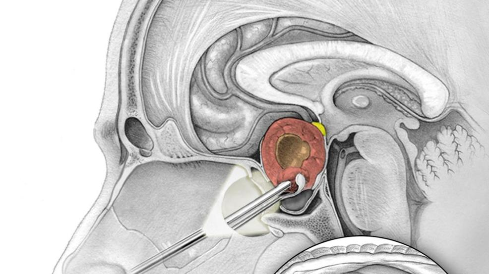

{{result}}

Pituitary tumors are abnormal growths that develop in your pituitary gland. Some pituitary tumors result in too much of the hormones that regulate important functions of your body. Some pituitary tumors can cause your pituitary gland to produce lower levels of hormones.
Most pituitary tumors are noncancerous (benign) growths (adenomas). Adenomas remain in your pituitary gland or surrounding tissues and don't spread to other parts of your body.
There are various options for treating pituitary tumors, including removing the tumor, controlling its growth and managing your hormone levels with medications. Your doctor may recommend observation — or a ''wait and see'' approach.